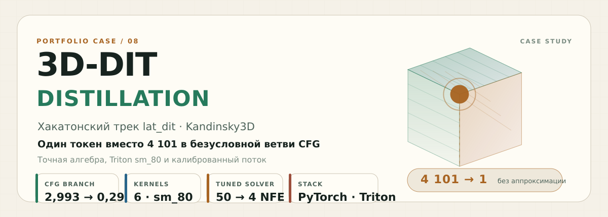
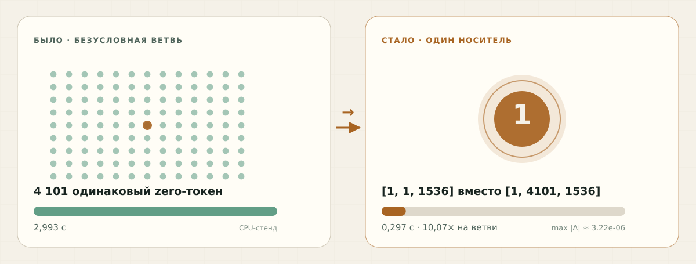
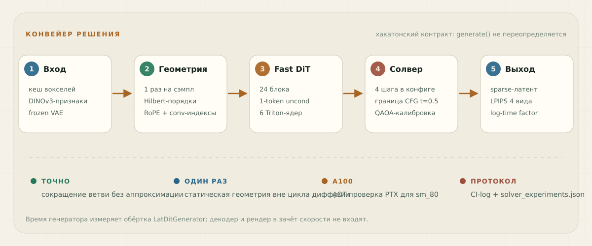
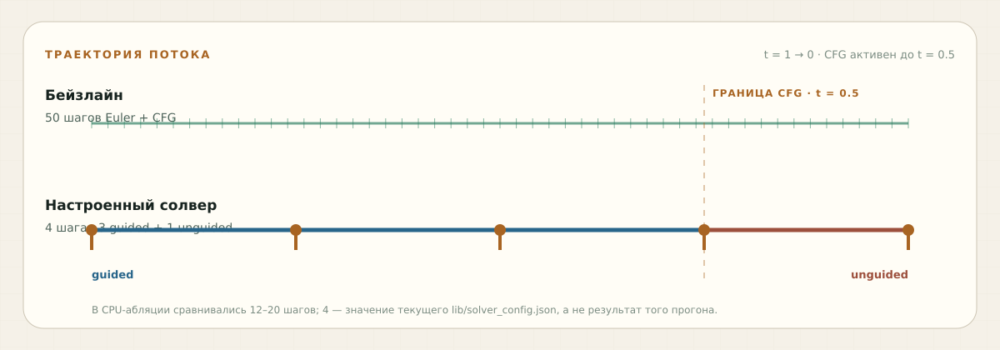

lat_dit · Kandinsky3D / Image23D
Обложка собрана из manifest.json
Участие в хакатоне / инженерный разбор
Один токен
вместо 4 101
В безусловной ветви classifier-free guidance модель обрабатывала 4 101 одинаковый zero-токен. Здесь достаточно одного: повторять одну и ту же работу тысячи раз не обязательно. Дальше — точная алгебра, шесть Triton-ядер, калиброванный солвер и честная граница между воспроизводимым замером и архивными баллами площадки.
Это описание участия в хакатонском треке и работы над решением. Призовое место или итоговый ранг здесь не заявляются; все крупные цифры снабжены источником.
01 / Главное наблюдение
Не аппроксимация, а равенство
neg_pred
02 / Почему это работает
Короткое доказательство
Все строки одинаковы
На входе cond = zeros(1, 4101, 1536), а clf одинаково broadcast'ится на каждый токен. До 2D RoPE все Q_c, K_c, V_c совпадают.
Softmax-веса суммируются в единицу, значит любая выпуклая комбинация одинаковых value-векторов даёт тот же самый v. В cross-attention воксели тоже видят одинаковые ключи и значения — ответ не зависит от дублирования.
Что убрали из кода
4101 × 4101self-attention в cond-ветви;N × 4101cross-attention;- Q/K-проекции и
rope_ndдля нулевого контекста; - 16 повторов
layer_norm(cond)за NFE; - лишние веса сведены в
_cond_to_v_w,_to_kv_cross_wи 1-token слайсы.
Развернуть шаги индукции
- Блок 0: одинаковые
Q_c, K_c, V_c; 2D RoPE не меняет факт равенства values. x → cond: достаточно одногоV_ccиto_out_cross, затем broadcast gate на воксели.cond → x: один запрос[1, 16, 96]против[N, 2, 16, 96].- Блоки 8–23 не меняют
cond; кешированный LayerNorm переиспользуется. - CFG-разность
g_cr · (cr_pos − cr_uncond)сохраняет прежний смысл.
03 / Инженерия
Что ещё пришлось переделать

generate() организатора остаётся нетронутым, время замеряет его обёртка.Статическая геометрия
Hilbert-порядки, conv_indices, RoPE-таблицы и перестановка шума вынесены из цикла на 88 NFE.
Fused kernels
Шесть ядер сливают QKNorm/RoPE/gather, gate/LN/AdaLN, SwiGLU и unpatchify. Для A100 есть AOT PTX sm_80.
Предкаст и warmup
bfloat16 для Linear, FP32 для ffn_conv, кеш gate'ов и 64-воксельный прогон до тайминга.
Граница CFG
Расписание делится на guided/unguided сегменты в u = 0.25, история многошагового метода сбрасывается.
Калибровка
QAOA-оптимизатор и кеши признаков подбирают траекторию; это уже приближённая часть с компромиссом по rel_l2.
Посылка
Валидатор формата, numerical equivalence, AOT-проверка и лёгкий submission.zip без гигабайтных весов.

4 — значение текущего solver_config.json ↗, а не результат того прогона.04 / Проверяемость
Что подтверждено протоколом
| Проверка | Значение | Источник |
|---|---|---|
pos_pred fast vs reference | max |Δ| = 9,54e-07, cos = 1,00000024 | solver_experiments.json ↗ |
neg_pred 1 token vs 4 101 | max |Δ| = 3,22e-06, cos = 1,00000000 | ci_run.log ↗ |
| Время безусловной ветви | 2,993 с → 0,297 с, 10,07× | ci_run.log ↗ |
| Шесть Triton-ядер | AOT PTX для sm_80 собран без ошибок | test_solution.py ↗ |
| Формат сдачи | корень и submission.zip прошли submission_format.py | ci_run.log ↗ |
Стенд использует уменьшенную 2-блочную модель, реальные веса flow.blocks.0.* и один сэмпл public_test на CPU. Полный LPIPS и GPU-latency здесь не измерялись.
Архивные баллы площадки — почему они не в карточках выше
В исходном README и PR #1 указаны публичные значения 15.5618, 56.7039 и 116.0542. Логов самой площадки в ветке нет, поэтому эти числа сохранены как историческая заявка. Внутренние метрики qaoa_state.json тоже не выдаются за независимый бенчмарк. Подробнее — EVIDENCE.md.
05 / Потрогать
Локальная проверка без GPU
Оформление и схемы проверяются стандартной библиотекой Python. Для полного хакатонского eval нужны внешние веса, public_test, CUDA-стек и A100 — команды собраны в REPRODUCE.md.
make docs-check
make docs-assets
make docs-serve
python3 tools/build_submission.py --output submission.zip
python3 tools/test_solution.pymake docs-serve поднимает статический сервер; страница не использует JS, внешние шрифты или обращения к другому хосту.
Указатель по репозиторию
Кейс текстом · Техническое устройство · Источники цифр · Запуск
README на GitHub ↗ · solution.py ↗ · score_final.py ↗
social-preview.png · манифест ассетов

Как сделаны схемы
Все SVG и PNG генерятся tools/build_portfolio_assets.py из solver_experiments.json и lib/solver_config.json. Есть светлая и тёмная версии для каждой схемы, а также prefers-reduced-motion-безопасная статика.
06 / Контекст
Место в портфолио
Визуальный язык взят из мастерской gitEdit: собственные SVG, светлая/тёмная обложка, раскрывающиеся доказательства и ссылка с каждого утверждения на исходник. Ассеты не копируются — они собраны из данных этого репозитория.